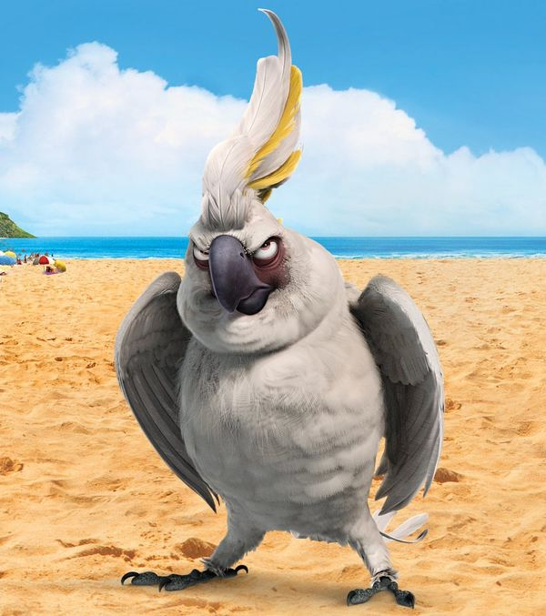
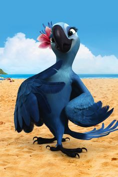
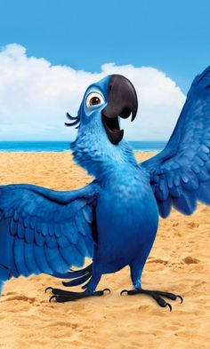

Rio
Rio premiered on March 22, 2011 in Lagoa, Rio de Janeiro, followed by its general release on April 15, 2011 by 20th Century Fox. The film received generally positive reviews from film critics, who praised the visuals, voice acting and music. The film was also a box office success, grossing over $143 million in the United States and $484 million worldwide.
Rio: Directed by Carlos Saldanha. With Karen Disher, Jason Fricchione, Sofia Scarpa Saldanha, Leslie Mann. When Blu, a domesticated macaw from small-town Minnesota, meets the fiercely independent Jewel, he takes off on an adventure to Rio de Janeiro with the bird of his dreams.
